从中期样衣证据回到取舍、产品角色、搭配系统与5套 系列编排 V2
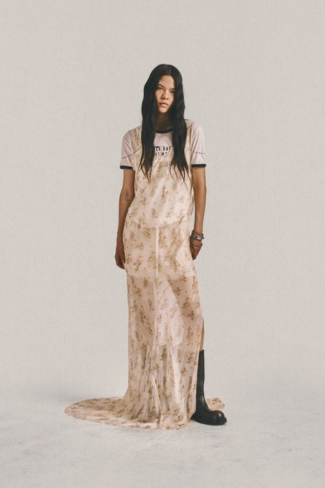
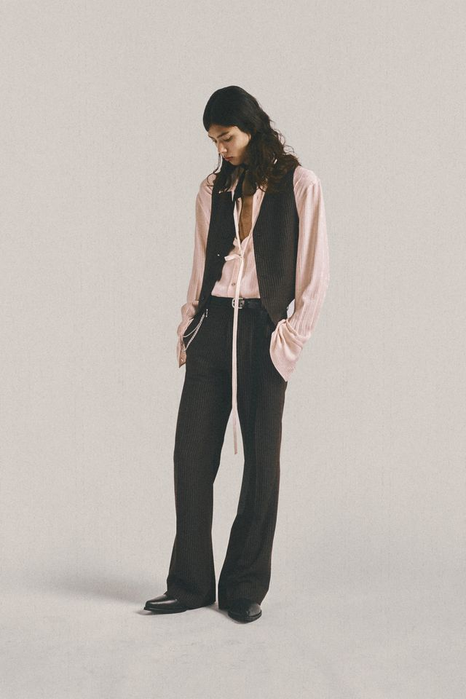
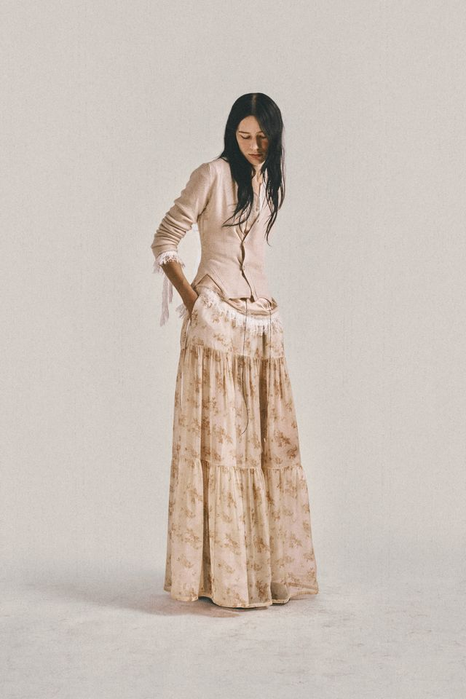
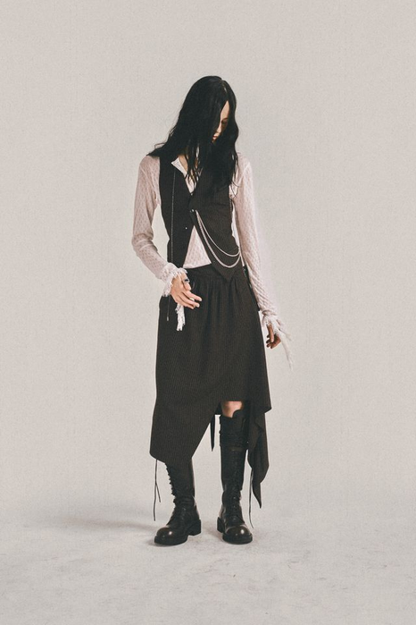
前8周建立方法并完成中期验证；后8周深化春夏与秋冬系列，最终独立完成主题系列与答辩。
不是听懂概念，而是让判断落进图纸、样片、编排和修改记录。
四件事要一起决定：哪些不变（系列常量）、每一套负责什么（产品角色）、怎么搭（搭配关系）、按什么顺序排（编排节奏）。
单独定其中一项，另外三项就会失控。
常量与角色在第1课时定，搭配与顺序在第2课时定。
删掉重复的造型，但不能让概念变弱；同时补上能穿、能搭、能卖的那几款。
难在“删”，不在“加”。
五套缩略图墙 + 产品角色图 + 一版说得出顺序理由的最终编排。
顺序说不出理由，就还没编排完。
五套春夏系列编辑板：标出形象款／过渡款／引流款，附单品清单、配色与材料索引。
下课前交，缺一项不算完成。
第08周回答“哪两套值得做成实物”；本周回答“把这五套编成能穿、能搭、能卖的系统”。
下面五项来自《25级〈女装设计〉课程大纲》与《考核大纲》原文，说明本周的每一项输出将落到哪里、如何计分。
原文：“培养学生女装产品的设计能力”。
本周的产品角色、产品架构与搭配系统，就是这一条的直接训练。
原文：“对流行趋势以及时尚动态的感知与分析能力”。
春夏季节条件与市场判断，必须进入删与留的取舍。
三大考核块之一，占比 40%（与“美学原理”并列最高）。
本周是这一块的核心环节，不是补充练习。
缩略图墙、产品角色图、编辑修改记录，计入出勤与作业完成情况。
课堂没留下记录的判断，不计入。
本周的五款编排直接进入期末系列，按六项标准（10/10/20/20/20/20）评分。
现在的取舍，期末不会重来一次。
教材用同一组人体做了四轮拓展设计：横向看品类，纵向看元素。
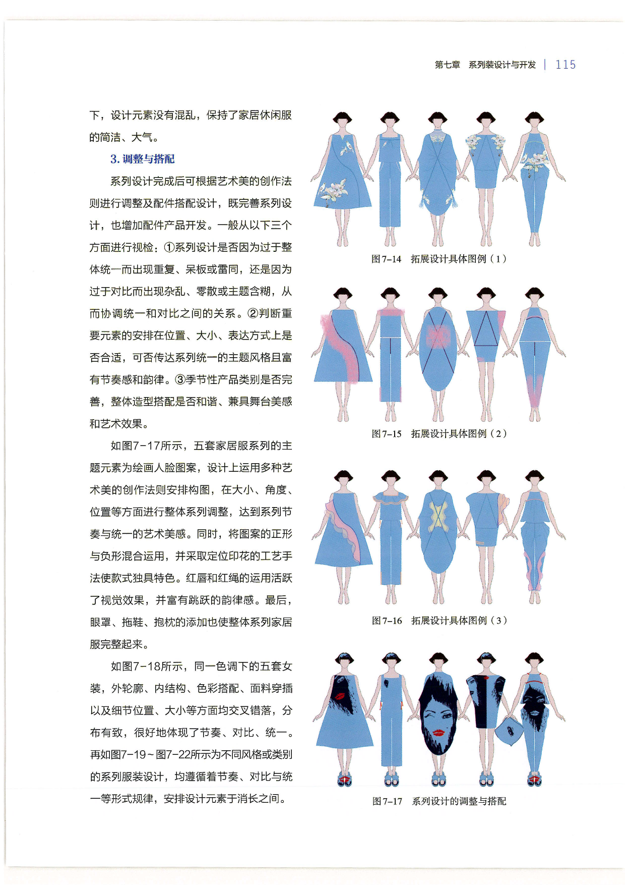
横向｜一行五套：品类在变。连衣裙 → 上衣＋长裤 → 垂褶连衣裙 → 短连衣裙 → 上衣＋长裤。五套里三套连衣裙、两套上下装——这就是产品架构。
纵向｜四行对照：结构不变，只有元素在动。从图7-14到图7-17，同一花卉元素改变位置、大小与正负形，人体、视角与蓝色调全程不变。
教材三条视检：①统一是否变成重复呆板？②元素在位置、大小、表达上是否合适？③季节性产品类别是否完善？
数一数你的五款：连衣裙与上下装的比例是多少？如果五套全是连衣裙，缺的是哪一类穿着场景？
来源：于芳《服装设计基础与创意实践》（中国纺织出版社，2023），第115页。教材图像只作方法证据，课件文字为课程改写；图像保持原始比例，仅做边界裁切。
同一组学生作品的两种证据——效果图排列与成衣照片，用来检验系列规则在实物上是否仍然成立。
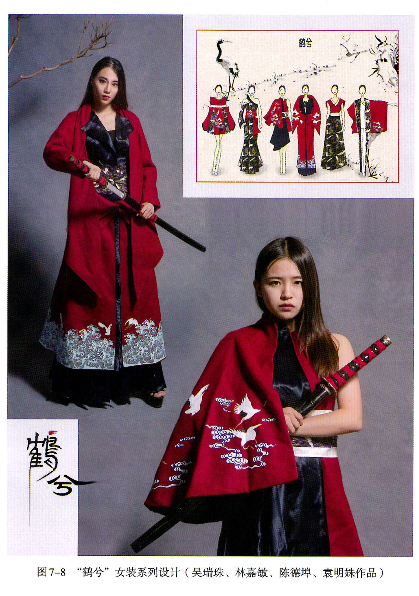
常量｜色域与母题。红与黑两色贯穿六套；鹤与云纹是全系列唯一的图形母题，没有第二套语言。
变量｜品类。大衣 → 连衣裙 → 披风 → 上衣＋长裙，同一母题落在不同品类上，构成产品宽度。
变量｜母题的位置与尺度。鹤纹在下摆是细密横向带，在披风上放大成整片——位置与尺度在变，母题本身不变。
实物验证。右上效果图与左侧成衣对照：刺绣位置、廓形体量与材料重量在实物上被重新确认，这是效果图无法单独证明的部分。
回到你自己的五款：你的母题重复出现了吗？它在五套之间改变的是位置，还是只改变了大小？
图像：于芳《服装设计基础与创意实践》（中国纺织出版社，2023），第112页，图7-8“鹤兮”女装系列设计（吴瑞珠、林嘉敏、陈德埠、袁明姝作品）。图像按教学需要裁切局部，未改变原始比例。
这份学生作品有七套造型，而本周你要交五套——先在别人的系列上练一次删除。
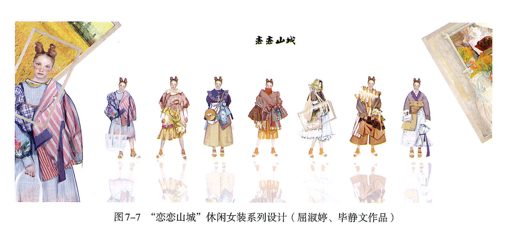
三分钟课堂动作：圈出你要删的两套，各写一句理由；与同桌交换，检查理由能否被反驳。删到五套后，剩下的品类分布还成立吗？
每个词后面写的是怎么检验，不是"是什么"——用不上手的定义等于没有定义。
在多套造型中稳定出现、维持识别的轮廓、结构、色彩或材料规则。
怎么检验：遮住其余四套，只看一套还认得出这个系列吗？认不出，说明常量没落在这一套上。
单套造型在系列中的位置：形象款、过渡款、引流款或搭配款。
怎么检验：删掉这一套，系列缺的是记忆点、过渡还是穿着入口？说不出，就是没有角色。
造型顺序中长度、体量、明暗、密度与开合形成的起伏。
怎么检验：把顺序倒过来看，阅读感变弱了吗？没变化，说明还没有节奏，只是排列。
上装、下装、连衣裙与外搭之间可替换、可叠穿、可复用的关系。
怎么检验：随机抽两套交换上下装，还剩下能穿的组合吗？一个都没有，就是单穿堆积。
“核心词汇”页定义了四个词；这一页只讲它们互相冲突时会发生什么——五套的容量装不下四项的最大值，必须有取舍。
常量多一分，系列更整齐，也更重复；差异多一分，更丰富，也更散。两者共用同一份容量。
失败信号：五套像同一套的五个角度；或者像五个人各做一套。
角色管单套的任务，搭配管跨套的复用。两者分别成立，不等于合起来成立。
失败信号：产品角色表填满了，但没有一件单品能互穿——五个孤岛。
节奏是顺序，角色是任务。同一个任务连着出现两次，顺序就失去落差。
失败信号：两个形象款挨在一起，开场过载，后面全是下坡。
只有五套的容量，四项不可能同时拉满。先决定牺牲哪一项，再动手删。
失败信号：不肯删，于是每套承担两个任务，结果哪一个都不清楚。
同一个问题，两地设计师给出不同解法。不问"哪一种更东方"，只问这个做法解决了什么、代价是什么。
减法：靠空量、阔身与克制用料 ↔ 加法：靠透明层次一层层叠上去。
本周两例：Samuel Guì Yang 用单层薄纱长裤留出空量；3.1 Phillip Lim 把雪纺压在缎面之上，靠层次而非减料。
轮到你：你的五套用的是哪一种？两种混用时，哪一套负责哪一种？
系带与斜襟：位置可调，开口随身体变化 ↔ 硬边与门襟：位置固定，边缘保持清晰。
本周两例：Samuel Guì Yang 的立领＋斜襟系带；3.1 Phillip Lim 的漆皮门襟与硬质边缘。
轮到你：开合方式同时决定穿脱路径和成本——你的引流款选了哪一种？
换品类：从外套降到针织 ↔ 降材料：从漆皮降到雪纺。
本周两例：Ann Demeulemeester 靠下装切换（长裙→阔腿裤→皮裤）；3.1 Phillip Lim 靠表面光泽逐级下降。
轮到你：从形象款走到引流款，你打算用哪一条路径？
先找出五套共用的开合方式，再看它如何改变每一套的品类、厚度与穿脱路径。
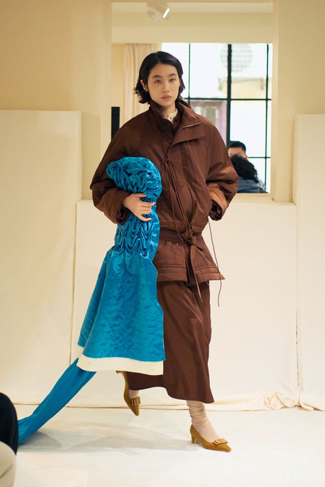
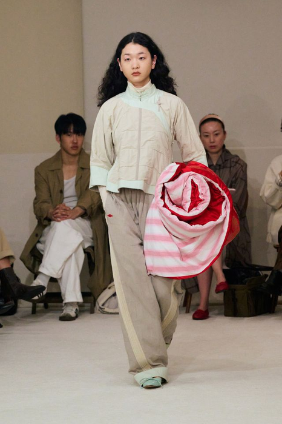
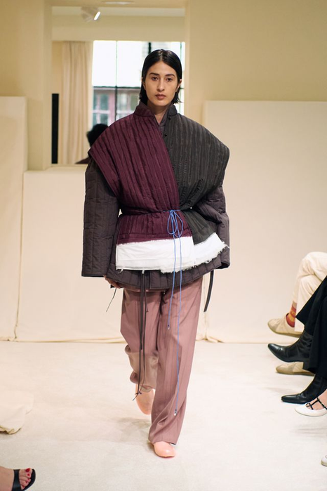
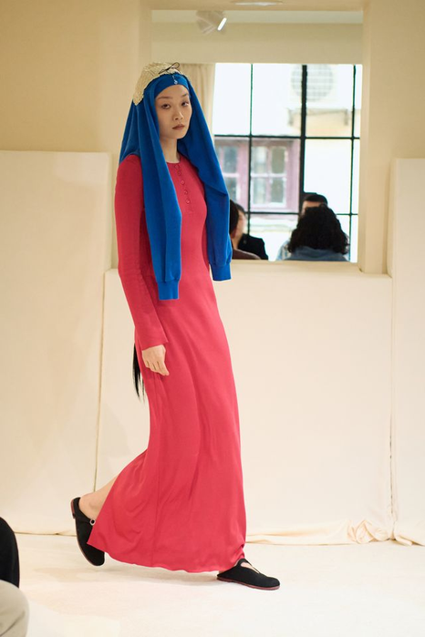
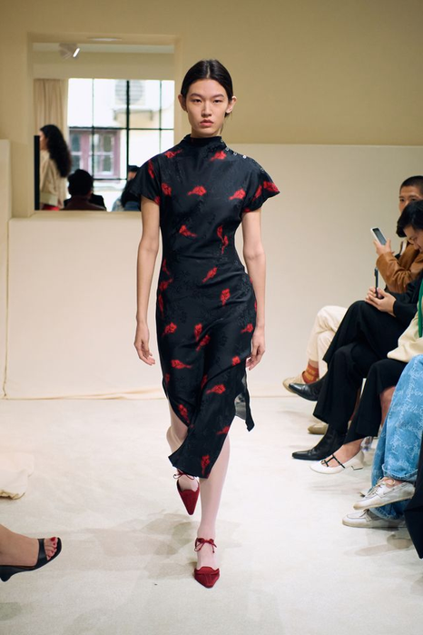
课堂回答：把“立领＋系带”换成拉链或翻领，这个系列还认得出来吗？哪一项才是真正的识别常量？
按强度从高到低重排这五套，看清被逐步拿掉的是哪三样东西。
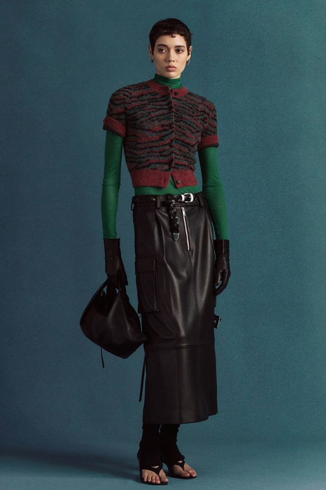
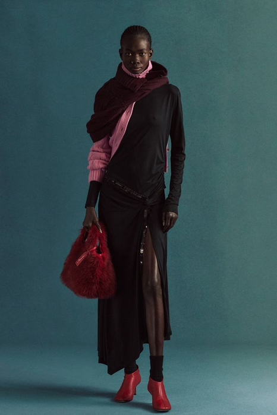
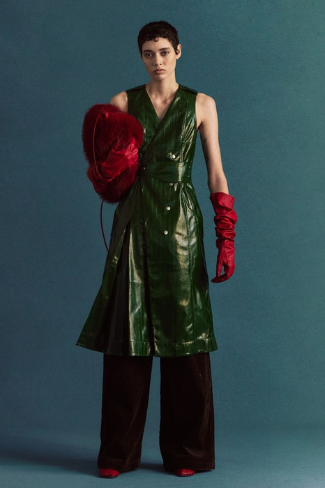
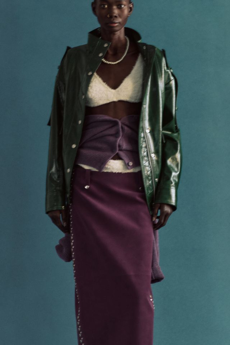
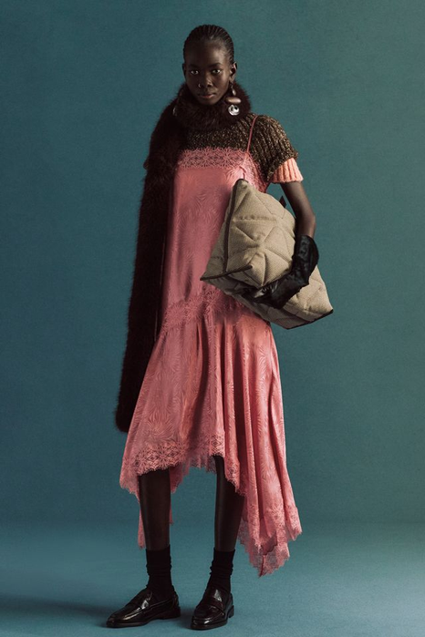
课堂回答：从03到05，被删掉的是哪三样？删到哪一步，观众开始认不出这是同一个系列？
这是本周唯一的硬判定。过不了这一条，后面的编排、色彩和材料都不用谈。
同一个原型，只改颜色、印花、长度或配饰。五套看起来热闹，但纸样几乎没变。
检验：转成黑白剪影——五套还分得出来吗？分不出，就是一款卖了五次。
每套在分割位置、体量所在、闭合方式、支撑手段里至少改动一项，而共同代码仍然可读。
检验：抽掉那条共同代码——五套会不会散？散了，说明代码是真的。
只过第一条＝五套太像；只过第二条＝五件不相干的衣服。系列要求同时成立。
检验：遮住四套只看一套，认得出属于这个系列吗？
效果图各画各的，看不出系列。排成一行以后，重复和空缺才会自己显出来。
形象款、核心产品款、比例变化款、过渡款、引流款——先定顺序，再看画面。
顺序本身是论证：为什么第一套是它？
外套／上装／下装／裙装／内层／配件横向拉一行，看每套由什么组成。
空一整列，说明系列缺一个品类。
同一个单品在几套里出现？出现三套以上，它就是常量而不是变量。
重复率过高＝五套太像；过低＝五件不相干。
强度不能一路平推。至少有一次明显的起落，否则观看者记不住任何一套。
把五套的强度画成折线，看它是不是一条直线。
东华大学郭曼宜。先看中间那张六套并排——这就是本周“结构变化判定”要你做的事。
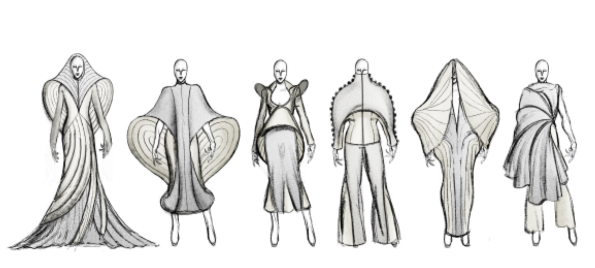
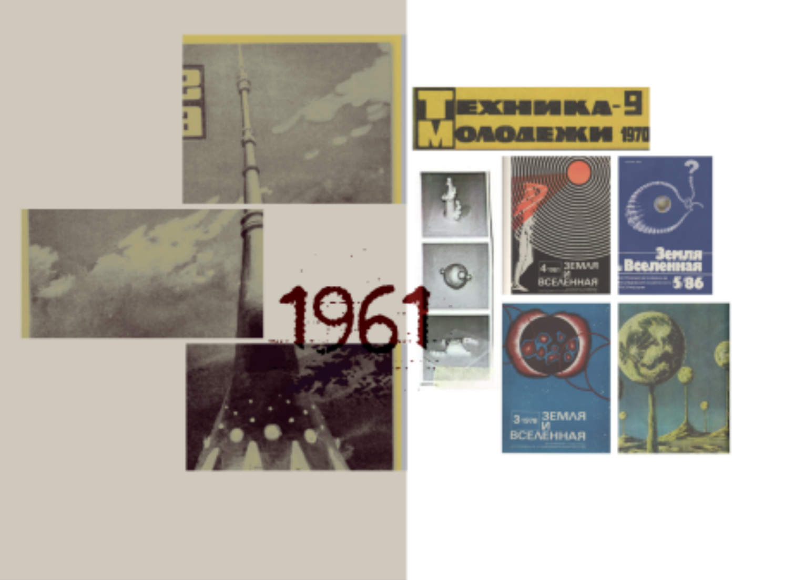
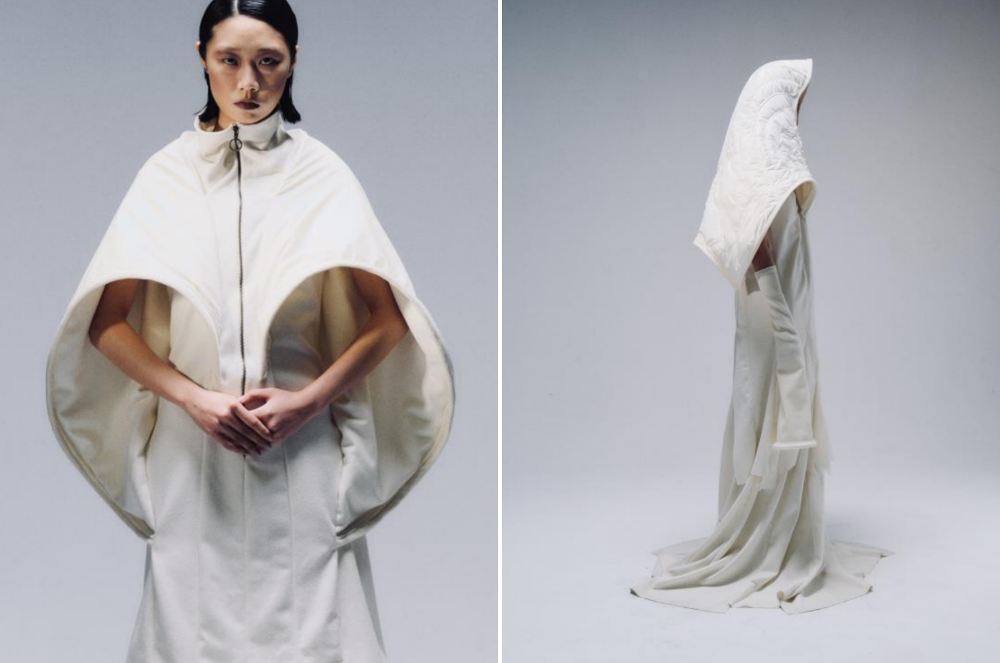
常量：一条包裹—悬垂的身体关系六套都在处理“布怎样从肩上落下来”。这一条抽掉，六套就散了。
变量：体积位置和开口方式肩、袖、下摆的膨胀位置在换，开口从前中移到侧缝——换的是结构，不是印花。
研究板→系列→成衣左边研究板给的是时代图像，中间把它变成六种结构，右边证明它做得出来。缺一环就断了。
每个阶段结束都要留下图像、标注或修改记录。
把全部春夏草图统一比例排布，只记录看得见的常量与重复。
为每个造型贴上 形象款、过渡款、引流款或搭配款标签并说明依据。
统计品类与搭配关系，找出过多品类、缺失品类和单次使用单品。
删除 2 个重复造型，补画 2 个角色明确的新方案。
第1课时定下了常量与角色；第2课时决定顺序与搭配，并把编排锁定。
方法与实验9′ → 实操28′ → 讲评与评价5′ → 预告与收尾3′
每个动作都必须产生可比较的前后版本。
把全部草图统一缩至 4–5 cm 高，消除绘画精细度对判断的干扰。
按轮廓、品类、色域和材料将造型分组，识别过度集中与空缺。
删除只重复前一造型、没有新角色或搭配价值的方案。
依据产品架构补充缺失的上装、下装、外搭或连衣裙。
在不破坏系列常量的前提下改变明暗、露肤、长度或体量。
为每件核心单品寻找至少两种搭配，验证 Outfit System。
用开场—展开—转折—收束组织 5 个造型的视觉叙事。
在系列编排下方标出角色、品类、主材料和一条设计规则。
矩阵用来生成与比较，不要求把所有组合都做成最终款。
| 变量 | A | B | C | D |
|---|---|---|---|---|
| 产品角色 | 形象款 | 过渡款 | 引流款 | 搭配款 |
| 露肤程度 | 封闭 | 局部开口 | 透明叠层 | 开放 |
| 长度 | 短 | 及膝 | 中长 | 拖地 |
| 色彩位置 | 全身 | 上部 | 下部 | 局部强调 |
| 搭配关系 | 单穿 | 上下装 | 内外层 | 可转换 |
怎么用：先固定“产品角色”一行，再在其余四行中每套只移动一格——移动两格以上就无法判断是哪个变量起作用。
五套的分配：形象款取最强组合；引流款取最保守组合；其余三套在两端之间分布，避免两套落在同一格。
无效组合：“封闭＋拖地＋全身色”重量过载；“开放＋短＋局部强调”缺少承重点。写下你删掉的组合与理由。
基准型与 V1–V3 必须用同一视角、同一比例、同一标注；否则差异来自画法，不是设计。
保留主题、主轮廓和主材料，记录当前产品角色与搭配对象。
先写死：不可改变的三项（轮廓／长度／材料）。
只改变上衣或下装长度，比较身体比例与系列节奏是否更清晰。
记录：改前后各多少厘米，节奏图上哪一格移动了。
只改变封闭、开口或透明层次，观察春夏感与穿着边界的变化。
记录：开口位置、面积与穿脱路径的变化。
结构不变，仅简化细节与材料，把形象款转译为引流款。
记录：简化了哪两项，角色从哪一档降到哪一档。
把强度、品类、搭配与顺序同时放回系列编排——五套各有一个不可替代的任务。
最完整地宣布主题张力、主轮廓与关键材料。
保留主规则，降低造型强度，把语言带向下一组产品。
用清晰品类、适度结构和可搭配性扩大穿着范围。
提供可与前三套互换的单品，证明系列具备复用关系。
回收前段线索，以色彩、体量或表面变化形成结尾记忆点。
检查：把任意一套抽走，缺的是哪一项任务？如果抽走后没有缺口，那一套就是多余的。
最后5分钟必须写下下一步动作，不能只停留在讨论。
以缩略图重排开场、展开、转折和收束，完成两种顺序提案。
用服装卡片交换上下装与内外层，检查至少三件核心单品的复用性。
同伴只用‘证据—判断—建议’反馈，不以个人喜好替代分析。
确定5套系列编排，并写出每个造型存在的必要性。
评审者只有 60 秒。四类证据要能各自独立被找到，不能混在一张图里。
五套等比例、同视角，能直接比较长度、体量、明暗与露肤。
不合格：比例不一或视角混杂——无法比较就等于没交。
标明形象款／过渡款／引流款／搭配款、单品类别与穿着场景。
不合格：两套挂同一个角色，或有一套没有角色。
至少 8 件单品、3 组可替换搭配和主辅材料索引。
不合格：单品只出现一次——没有复用就不是系统。
300 字以内解释系列常量、删减依据、节奏与市场边界。
不合格：只写"更协调、更丰富"这类形容词，不指向具体造型编号。
禁止只说好看、不好看、再丰富一点。
你的判断在图、样片或系列编排的哪里？
本周指向：指出五套中的具体编号，不能说“整体感觉”。
这个形式为何回应主题、身体或市场条件？
本周指向：说明它承担 形象款／过渡款／引流款 中的哪一个角色。
应该保留、删除、替换还是补位？
本周指向：若删掉这一套，系列缺失哪个品类或哪段节奏？
下一版具体改变哪个变量，如何验证？
本周指向：指定矩阵中的一行，说明改动后如何重排顺序。
标记为“成立 / 部分成立 / 需重做”，并写下证据位置。
主题能够通过多造型中的可见规则被识别。
形象款、过渡款、引流款 分工清楚，品类结构完整。
长度、体量、色彩与密度具有可读的起伏和顺序。
核心单品可复用，穿着场景与顾客边界明确。
删减、补位与排序均有图像证据和文字说明。
下周不重讲方法，直接用你这周锁定的五款开始——材料必须从本周提交物中取用。
含产品角色标注与顺序理由，作为秋冬品类映射的起点。
春夏的角色分工能否直接搬到秋冬？先想一遍。
连同删除理由一起带来，下周要检查这些理由在秋冬是否仍然成立。
春夏删掉的，秋冬可能正是需要的。
找 3 张外套参考，标出长度、开合与叠穿方式，不看风格只看结构。
秋冬的重量从外套开始算。
用一句话写出"我的系列转到秋冬时，最不确定的是______"。
下周第一件事就是回答它。
平时训练不是零散作业，而是期末系列的证据积累。
主题回应当下，并形成自己的问题与立场。
提炼的设计元素与当季趋势、审美和来源一致。
款式回应身体、动作、场景与真实穿着需求。
比例、色彩、材料与细节共同形成完整造型。
顾客、价格、品类和使用情境边界清楚。
风格统一，同时具有角色、搭配与造型变化。